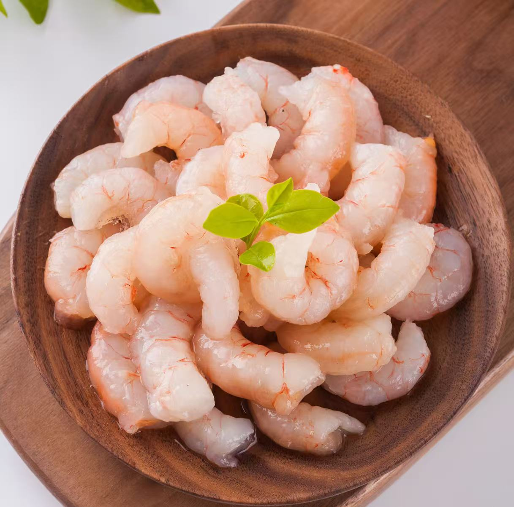

首选鲜冻青虾仁（白对虾/南美白对虾）,性价比高、肉质紧实，适合蛋炒饭；鲜活基围虾现剥更佳，虾味更浓。
虾仁处理+炒制：去腥锁嫩，两步搞定
1. 基础处理（去腥提鲜）:虾仁解冻后挤干水分，加少许盐+白胡椒+半勺料酒抓匀，再放1小勺淀粉+1滴食用油抓裹，腌制5分钟（淀粉锁水，油防粘锅）;
2. 滑炒断生（核心嫩度）:炒鸡蛋的锅不用洗，留少许底油，小火下入虾仁，快速滑炒15-20秒，至虾仁蜷曲变红、刚断生立刻盛出（炒老会发柴，后续和蛋、饭同炒10秒即可）;
ChenZhe QingRensjna 2026.1.23